Për ekipin
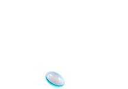
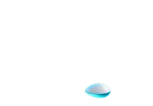
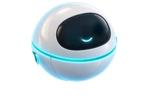
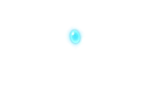
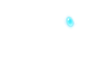
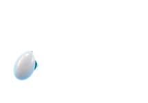
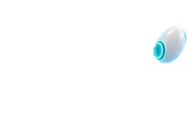
Kërkesa u shënua.
Pamje demonstrimi: Ari merr një telefonatë dhe e shënon kërkesën për ekipin.
Ari
Kërkesa
Përgjigjet në interesime, mbledh detajet dhe përgatit hapat e radhës për ekipin.
Shiko detajet+
Burimet
Vetëm burimet dhe qasjet e miratuara për pilotin.
Veprimet
- Organizon kërkesat
- Përgatit përgjigje
- Kujton ndjekjen e tyre
Miratimi njerëzor
Burimet, qasjet dhe veprimet përcaktohen për secilin projekt. Dërgimi i përgjigjeve dhe ndryshimet me ndikim ndjekin miratimin e caktuar nga ekipi.
U përmbledh
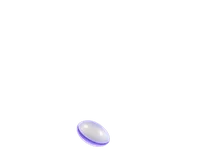
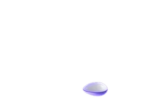
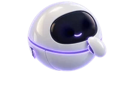
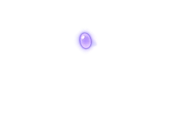
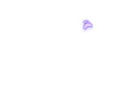
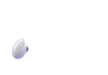
Përmbledhja është gati.
Pamje demonstrimi: Dita shkruan në tastierë, organizon të dhënat dhe përgatit përmbledhjen.
Dita
Të dhëna
Lexon tabela, CRM dhe dokumente, pastaj përgatit përmbledhje të qarta për ekipin.
Shiko detajet+
Burimet
Vetëm burimet dhe qasjet e miratuara për pilotin.
Veprimet
- Përmbledh raporte
- Gjen boshllëqe
- Nxjerr pika kryesore
Miratimi njerëzor
Burimet, qasjet dhe veprimet përcaktohen për secilin projekt. Dërgimi i përgjigjeve dhe ndryshimet me ndikim ndjekin miratimin e caktuar nga ekipi.
Hapat u dërguan
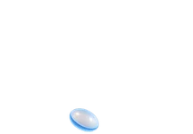
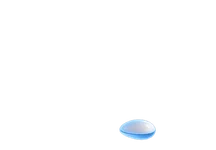
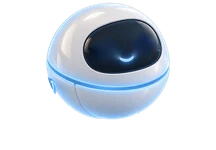
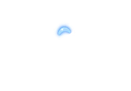
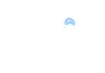
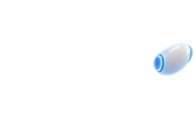
Ju dërgova hapat.
Pamje demonstrimi: Nora lexon mesazhin e klientit dhe i dërgon hapat.
Nora
Mbështetje
Përgjigjet në pyetjet e zakonshme dhe ia kalon ekipit rastet që kërkojnë vendim.
Shiko detajet+
Burimet
Vetëm burimet dhe qasjet e miratuara për pilotin.
Veprimet
- FAQ për klientë
- Bileta me detaje
- Njoftime për ekipin
Miratimi njerëzor
Burimet, qasjet dhe veprimet përcaktohen për secilin projekt. Dërgimi i përgjigjeve dhe ndryshimet me ndikim ndjekin miratimin e caktuar nga ekipi.
Për miratim
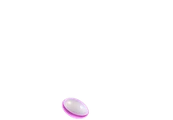
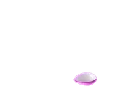
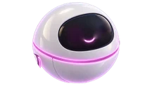
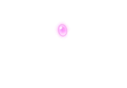
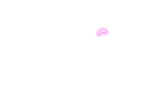
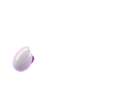
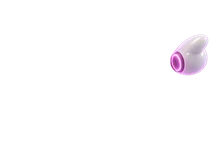
Gati për miratim.
Pamje demonstrimi: Leo e vendos detyrën në rrjedhë dhe e përcjell për miratim.
Leo
Operacione
Ndjek detyrat, afatet dhe miratimet, që puna të mbetet e organizuar.
Shiko detajet+
Burimet
Vetëm burimet dhe qasjet e miratuara për pilotin.
Veprimet
- Lista pune
- Kujtesa automatike
- Miratime të qarta
Miratimi njerëzor
Burimet, qasjet dhe veprimet përcaktohen për secilin projekt. Dërgimi i përgjigjeve dhe ndryshimet me ndikim ndjekin miratimin e caktuar nga ekipi.
Pjesa u gjet
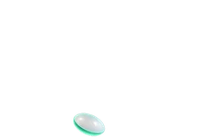
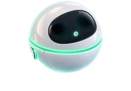
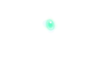
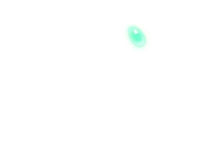
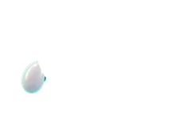
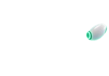
E gjeta pjesën.
Pamje demonstrimi: Mira kërkon në dokument dhe gjen pjesën e duhur.
Mira
Informacion
I kthen dokumentet dhe procedurat në përgjigje që ekipi i gjen më lehtë.
Shiko detajet+
Burimet
Vetëm burimet dhe qasjet e miratuara për pilotin.
Veprimet
- Kërkim në dokumente
- Përgjigje për ekipin
- Manuale të thjeshta
Miratimi njerëzor
Burimet, qasjet dhe veprimet përcaktohen për secilin projekt. Dërgimi i përgjigjeve dhe ndryshimet me ndikim ndjekin miratimin e caktuar nga ekipi.
Raporti është gati
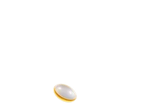
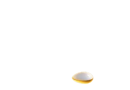
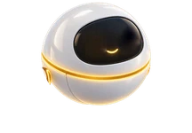
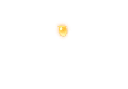
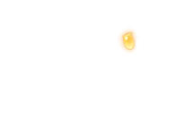
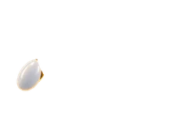
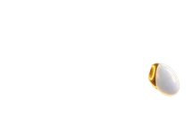
Raporti është përgatitur.
Pamje demonstrimi: Fin llogarit shifrat dhe përgatit raportin.
Fin
Raporte
Mbledh shifrat, pagesat dhe gjendjen e projekteve në raporte të lexueshme.
Shiko detajet+
Burimet
Vetëm burimet dhe qasjet e miratuara për pilotin.
Veprimet
- Raporte javore
- Alarm për vonesa
- Pamje për menaxhim
Miratimi njerëzor
Burimet, qasjet dhe veprimet përcaktohen për secilin projekt. Dërgimi i përgjigjeve dhe ndryshimet me ndikim ndjekin miratimin e caktuar nga ekipi.